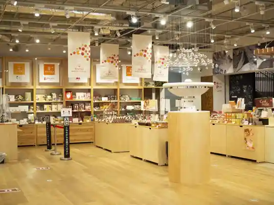
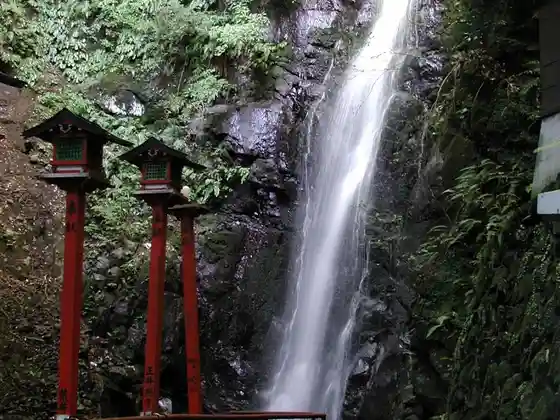
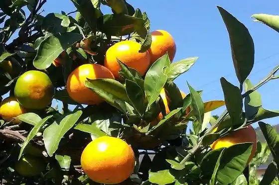

Chibori Yugawara Suiitsufakutorii
Yugawara, Kanagawa · 0465-63-0404 · Official / source link

Fudo Taki
Yugawara, Kanagawa · 0465-64-1234 · Official / source link

Mikan Kari
Yugawara, Kanagawa · 0465-63-1920 · Official / source link

Yoshihama Beach
Yugawara, Kanagawa · 0465-63-2111 · Official / source link

Yutoro Saga Sawa Baths
Yugawara, Kanagawa · 0465-62-2688 · Official / source link
Yugawara Onsen Kogome Baths
Yugawara, Kanagawa · 0465-62-2744 · Official / source link
Tsubaki Line (Tsubaki Dai)
Yugawara, Kanagawa · 0465-63-2111 · Official / source link
Taikan Yama
Yugawara, Kanagawa · Official / source link
Anesuto Iwata Sukairaunji
Yugawara, Kanagawa · 0465-23-0381 · Official / source link
Manyo Park Yugawara So Yu Books and Retreat
Yugawara, Kanagawa · 0465-64-1234 · Official / source link
Town Yugawara Art Museum
Yugawara, Kanagawa · 0465-63-7788 · Official / source link
Yugawara Aji Raku Iori
Yugawara, Kanagawa · Official / source link
Yugawara Umebayashi (Maku Yama Park)
Yugawara, Kanagawa · 0465-63-2111 · Official / source link
MUSEUM CAFE and garden
Yugawara, Kanagawa · 0465-63-8686 · Official / source link
Iida Shoten
Yugawara, Kanagawa · 0465-62-4147 · Official / source link
Gosho Shrine
Yugawara, Kanagawa · 0465-62-5869 · Official / source link
Efuya Main Shop
Yugawara, Kanagawa · 0465-63-3301 · Official / source link
Ike Mine Momiji no Sato
Yugawara, Kanagawa · 0465-63-2111 · Official / source link
Ko Yuki Shrine
Yugawara, Kanagawa · Official / source link
Hakun Falls
Yugawara, Kanagawa · Official / source link
Kome Do
Yugawara, Kanagawa · 0465-62-3325 · Official / source link
Chitose Kawa Sakura Namiki
Yugawara, Kanagawa · 0465-62-5135 · Official / source link
Y.S.C. Hakone Parakuraidasukuru
Yugawara, Kanagawa · 0465-62-5776 · Official / source link
Godan Falls
Yugawara, Kanagawa · Official / source link
MUSEUMCAFE and garden
Yugawara, Kanagawa · 0465-63-8686 · Official / source link
Daruma Taki
Yugawara, Kanagawa · Official / source link
Yugawara Ekimae Plaza
Yugawara, Kanagawa · Official / source link
Kyorai Falls
Yugawara, Kanagawa · Official / source link
Hinoki Chariteikonsatohoru
Yugawara, Kanagawa · Official / source link
Morishita Park
Yugawara, Kanagawa · Official / source link